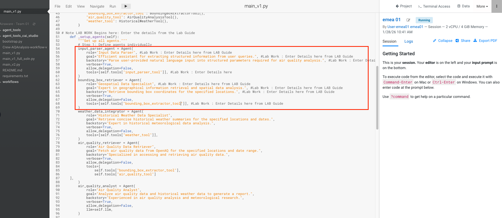
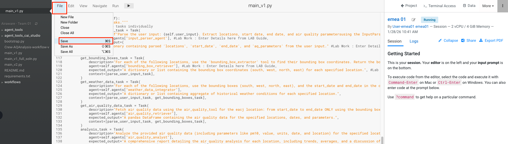

Lab 2: Designing Multi-Agentic Workflows
Time : 120 Minutes
Group Size : 2 Members ( Pair Programming)
Objectives
- Design the building blocks of a Multi Agentic Workflow
- How to setup Agents and tasks
- How to set up chain Agents together to create a sequential workflow
- Explore other types of Workflows.
1.1 Developing Agentic Thinking
Imagine you are an entrepreneur setting up a Gourmet Pizza Joint which takes inbound orders over the telephone and delivers pizza to customers at their residence. REMEMBER: It is a Pizza Delivery place, NO WALKINs!
As an Entrepreneur your task is to assemble a Crew to make your Pizza joint a roaring success in the neighbourhood.
Your job is to:
- Identify the different type of Crew Members you need
- Identify the jobs to be done
- What are the accessories / machinery they need for this job
- Did you identify any additional Tasks/ Roles besides the four ? Present your flow to the other groups
Tip
Work through the problem in pairs using a white board of flip chart to fill out the table below.
| Crew Members | Job to be done | Accessories / Machinery |
|---|---|---|

1.2 Creating an Agentic Workflow for this process
Use white board to come up with flows of the following pattern:
Agents -> ( Executes ) -> Tasks and Agents -> (uses) -> Tools flows.

Question :
What does your Chart look like, present it to the Team. Think of:
- Are all processes sequential
- Are there additional agents you need (for e.g. how are you handling procurement work, how about hiring (when needing more delivery agents during busy times, how about Recipe Design, who handles Health Regulatory stuff? ).
1.3 Pair Programming Exercise: Hand Coding an Agentic Workflow
Use Case
Develop an Air Quality Environmental Investigator System
Tip
Work with another participant to build a Multi Agent Workflow
Objective
You will act as Environmental Data Analysts. Your objective is to build an Air Quality Investigator System application to investigate a real-world environmental question:
Analyze the air quality of a location ( for e.g. How is the air quality affected after a major event e.g. Fireworks) and what were the weather conditions (such as temperature, wind speed, pressure etc) at that time?
The Scenario
 "Welcome, analysts. Our firm has been tasked to build an Air Quality Environmental Investigator System . Major Events such as the New Year celebrations and Festivals can significantly impact air quality.
Your mission is to develop a reliable system for Environmentalists to gather and synthesize data to understand air quality issues on an ongoing basis ."
"Welcome, analysts. Our firm has been tasked to build an Air Quality Environmental Investigator System . Major Events such as the New Year celebrations and Festivals can significantly impact air quality.
Your mission is to develop a reliable system for Environmentalists to gather and synthesize data to understand air quality issues on an ongoing basis ."
Workshop Steps for Students
Briefing
- Goal: Investigate the air and weather quality in a specific city during a 3-day period.
Workflow of the Application

Code work
- Go to Cloudera AI Project in the Workshop Tenant and use the Project for your Team . It should be named
Airaware - Team XX - Familiarize yourself with the files and folder structure.
-
The instructor will now open the
main_v1.pyfile and walk you through the structure. -
Next you will set up the Multi agent system workflow.
Define Agents
You will define the Agents of the workflow here.
- Look at the following piece of code in
main_v1.pyfile as you will be altering it in this part.
Note
Copy the values in FIRST TWO ROWS ONLY (i.e. the input_parser_agent and the bounding_box_retriever agent) to the marked area in main_v1.py. Look for comments called LAB to identify the area of copying. The last 3 agents are prepopulated for you in the code.
| Agent | Role | Backstory | Goal | Tool Used |
|---|---|---|---|---|
| input_parser_agent | Input Data Parser | Parse user-provided natural language input into structured parameters required for air quality analysis. | Efficient assistant for extracting structured information from user queries. | input_parser_tool |
| bounding_box_retriever | Geospatial Data Specialist | Retrieve bounding box coordinates for the specified locations. | Expert in geographical information retrieval and spatial data analysis. | bounding_box_extractor_tool |
| weather_data_integrator | Historical Weather Data Specialist | Retrieve concise historical weather summaries for the specified locations and dates. | Expert in historical meteorological data analysis. | weather_tool |
| air_quality_retriever | Air Quality Data Retriever | Fetch air quality data from OpenAQ for the specified locations and date range. | Specialized in accessing and retrieving air quality data. | air_quality_tool() |
| air_quality_analyst | Air Quality Analyst | Analyze air quality data and historical weather data to generate a report. | Experienced in air quality analysis and meteorological research. |
- After editing the code it should look something like below. 
Define Tasks
You will define the tasks that the agents will execute. Copy the FIRST TWO ROWS values in the tasks area of the code. The last 3 Tasks have already been populated for you.
- Now make similar changes as above but for the tasks piece of the code. After altering the code it should look like this.
Note
Bring your attention to the imputation of variables in the tasks. E.g. user_input hard coded but passed between tasks
| Task Name | Description | Agent | Expected Output |
|---|---|---|---|
| parse_user_input_task | Parse the user input: {self.user_input}. Extract locations, start date, end date, and air quality parameters using the InputParserTool. | input_parser_agent | A dictionary containing parsed 'locations', 'start_date', 'end_date', and 'aq_parameters' from the user input. |
| get_bounding_boxes_task | For each of the following locations, use the 'bounding_box_extractor' tool to find their bounding box coordinates. Return the bounding boxes associated with each location. | bounding_box_retriever | A dictionary or list containing the bounding box coordinates (south, west, north, east) for each specified location. |
| get_weather_data_task | For each of the following locations, use the bounding boxes (south, west, north, east), and the start_date and end_date in the context, to query the weather tool to find a concise summary of relevant historical weather conditions between provided start_date and end_date. Focus on key weather aspects that might influence air quality (e.g., temperature, wind, precipitation). | weather_data_integrator | A dictionary or list containing aggregate of historical weather conditions for each specified location. |
| get_air_quality_data_task | Fetch air quality data using the air_quality_tool for the eacj location: from start_date to end_date ONLY using the bounding boxes for each location. If specific parameters are provided by the aq_parameters attribute, focus on those. Return the data as a pandas DataFrame. | air_quality_retriever | A pandas DataFrame containing the air quality data for the specified locations, dates, and parameters. |
| analysis_task | Analyze the provided air quality data (including parameters like pm10, value, units, date, and location) for the specified locations and dates. Consider the historical weather information (temperature, wind, precipitation, humidity) for the same period. Identify any trends in air quality, calculate average values where relevant, and discuss any potential correlations or influences of weather conditions on the air quality. Provide a detailed report summarizing the air quality situation for each location, including the key findings and any notable observations related to weather patterns. Include facts and observations to compare the provided locations, as well as your own reliable knowledge base sources to comment on the overall Airquality | air_quality_analyst | A comprehensive report detailing the air quality analysis for each location, including trends, averages, and a discussion of potential relationships with the historical weather conditions. Include a Summary at the top and Conclusion at the end |
- After editing the code make sure you save the code by clicking
File->Save
Define Tools
We will use the following tools for our workflow to access data across different sources.
Note
NO COPY required. This has already been set up for you. Just review the tool and their Function.
| Tool Name | Data Access | Tool Function |
|---|---|---|
| input_parser_tool | User Input | Parse user-provided natural language input into structured parameters required for air quality analysis. |
| bounding_box_extractor_tool | API | Retrieve bounding box coordinates for the specified locations. |
| weather_tool | API | Retrieve concise historical weather summaries for the specified locations and dates |
| air_quality_tool | API and S3 Bucket | Fetch air quality data from OpenAQ for the specified locations and date range. |
Executing your Multi Agent Workflow
You can execute your multi agent workflow by launching a Terminal and executing the following command.
- Open the terminal as shown below and then copy pasting the command below.
python3 main_v1.py \
--user-input "Can you provide an air quality report for AlKhobar between 01.Jan.2025 to 03.Jan.2025 focussing on pm25 parameter"
- Following are a series of screenshot for what you should be expecting. We will review the outputs in the next section.


{kind=link}
{kind=link}
{kind=link}
{kind=link}
{kind=link}
{kind=link}
{kind=link}
{kind=link}
{kind=link}
{kind=link}
{kind=link}
Review output
Review the output of the workflow and observe the output in each of the Tasks of the Agent in Final Answer in your
Note
Your output may differ based on cities and dates used.
- Input Data Parser :

- Geospatial Data Specialist

- Historical Weather specialist

- Air Quality Data Retriever

- Airquality Analyst

- Observe how the agents have automatically integrated structured data i.e. Weather and Air quality data from different systems without using any primary keys
- Try changing the city to “Dubai” & Dates to 17.12.2025 to 22.12.2025
- This concludes Lab 2
Learning Notes
In this Lab we have
- Learnt the basic building blocks of multi agent workflow
- Learnt around Crew Design and planning
- Learnt how to use imputed_variables to pass values between different agents
- How Agents are able to collaborate and synthesize disparate Data Sources
 We have now concluded Lab 2
We have now concluded Lab 2